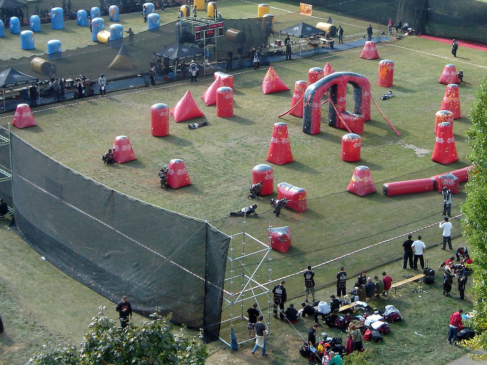

Milsim
El paintball es un emocionante deporte que combina estrategia, habilidad y adrenalina. Surgió a principios de la década de 1980 como una forma de recreación y entrenamiento para equipos militares. La idea original era utilizar marcadoras de pintura para simular situaciones de combate sin el riesgo de lesiones graves.
En 1981, tres amigos estadounidenses, Hayes Noel, Charles Gaines y Bob Gurnsey, desarrollaron el primer juego de paintball, que se llevó a cabo en un bosque de New Hampshire. Utilizando marcadoras de airsoft modificadas y bolas de pintura, los participantes se enfrentaron en una emocionante batalla de eliminación.
El paintball ganó popularidad rápidamente, y en 1982 se fundó la National Survival Game (NSG), la primera organización dedicada exclusivamente al deporte del paintball. Desde entonces, el paintball ha evolucionado en un deporte competitivo con una amplia base de jugadores en todo el mundo.
Speedball
El speedball es una variante del paintball que se juega en un campo más pequeño y con obstáculos inflables o estructuras modulares. A diferencia del paintball tradicional, que se juega en terrenos naturales, el speedball se desarrolla en campos diseñados específicamente para maximizar la velocidad y la intensidad del juego.
En el speedball, los equipos compiten para eliminar a sus oponentes y capturar la bandera en un tiempo limitado. La rapidez, la precisión y la comunicación son clave para el éxito en este formato de juego. Los jugadores utilizan marcadoras de paintball de alto rendimiento y tácticas coordinadas para dominar el campo y ganar la partida.
El speedball ha ganado popularidad en los últimos años debido a su naturaleza rápida y emocionante. Es un deporte dinámico que requiere habilidad, estrategia y trabajo en equipo, y atrae a jugadores de todas las edades y niveles de experiencia.
